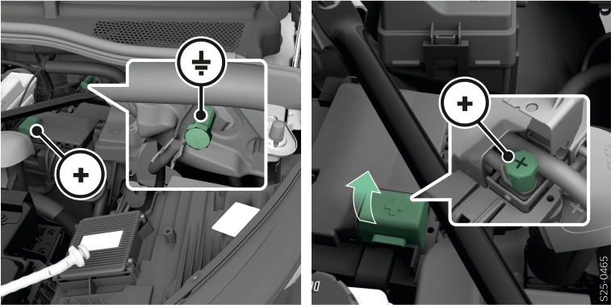

Démarrer le véhicule en utilisant la batterie 12 volts d'un autre véhicule

MISE EN GARDE
Risque de blessures ! Risque d’endommagement du véhicule !
Placer le câble de démarrage de manière à ce qu’il ne soit pas happé par les pièces en rotation dans le compartiment moteur.

AVERTISSEMENT
Risque de court-circuit !
Les parties non isolées de la pince polaire ne doivent pas se toucher.
Le câble raccordé au pôle positif de la batterie 12 volts du véhicule ne doit pas entrer en contact avec les pièces conductrices du véhicule.
Les véhicules ne doivent pas se toucher.
Connecter le câble d’aide au démarrage
Couper le contact.
Ouvrir le capot avant Capot avant.
Dégager la batterie 12 V Composants sous le capot avant.
Brancher les pinces des câbles de démarrage sur la batterie 12 V déchargée
 et la batterie 12 V d’alimentation
et la batterie 12 V d’alimentation  selon l’ordre indiqué dans la légende.
selon l’ordre indiqué dans la légende.


- A
 Pôle de la batterie 12 V déchargée
Pôle de la batterie 12 V déchargée- B
 Pôle de la batterie 12 V d'alimentation
Pôle de la batterie 12 V d'alimentation- C
 Pôle de la batterie 12 V d'alimentation (ou point de masse)
Pôle de la batterie 12 V d'alimentation (ou point de masse)- D
Point de masse du véhicule avec une batterie 12 volts de véhicule déchargée


 de la batterie 12 V du véhicule (sous le capuchon)
de la batterie 12 V du véhicule (sous le capuchon)Mettre le véhicule en service
Démarrer le moteur du véhicule alimenté et le laisser tourner au ralenti (s’applique aux véhicules avec moteur à combustion) .
ou :
Allumer la propulsion électrique du véhicule alimenté (s’applique aux véhicules équipés d’un moteur électrique) .
Mettre le contact du véhicule avec la batterie 12 volts du véhicule déchargée.
Si le véhicule dont la batterie 12 volts est déchargée ne démarre pas dans les 10 secondes, répéter la procédure au bout d’environ 30 secondes.
Débrancher le câble
Retirer les câbles dans l’ordre inverse du branchement.
Reposer le cache gauche pour la zone située sous le capot avant, le bouchon du réservoir de lave-glace ainsi que le rangement Composants sous le capot avant.
Fermer le capot avant.